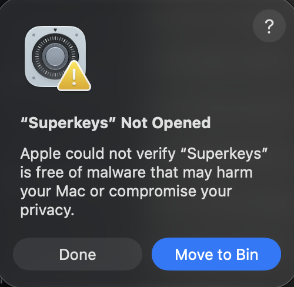
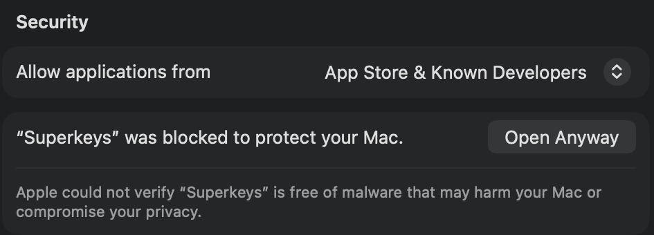
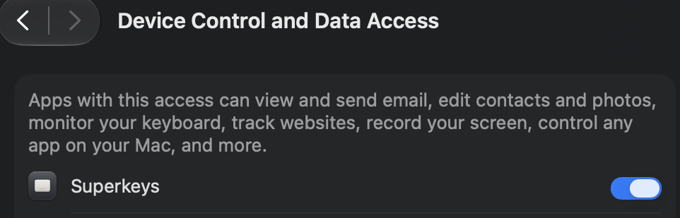

Opening Superkeys for the first time
Superkeys isn't notarised by Apple yet, so macOS asks you to approve it once. It takes about a minute, and you only do it once: updates install themselves and never ask again.
1Click Done, not Move to Bin
The first time you open Superkeys, macOS says it was not opened. The highlighted button is Move to Bin; ignore it and click Done.

brew reinstall --cask rxmeez/tap/superkeys and start again.
2Open Anyway
Open System Settings → Privacy & Security and scroll all the way to the bottom, to Security. Next to “Superkeys” was blocked to protect your Mac, click Open Anyway, confirm with Touch ID or your password, then click Open.

3Turn on Accessibility
Superkeys needs Accessibility access to read Caps Lock and right ⌘ and to move windows. When it asks, go to Privacy & Security → Accessibility (called Device Control and Data Access on newer macOS) and switch Superkeys on.

That's it
The first time it opens, Superkeys walks you through the rest itself: turning on Accessibility, trying ✦ Caps Lock and ☾ right ⌘, and picking keys for the apps you use most. Take the tour again any time from Settings → General. From now on Superkeys keeps itself up to date in the background, with no more prompts.
If something doesn't work
- The Superkeys switch is on, but the keys do nothing
- macOS sometimes keeps an old entry. In the Accessibility list, select Superkeys, click − to remove it, then quit and reopen Superkeys and switch it on again.
- I can't find Open Anyway
- It only appears for about an hour after you try to open Superkeys. Open Superkeys again, click Done, then go straight to Privacy & Security and scroll to the bottom.
- Removing Superkeys
-
brew uninstall --cask superkeysquits it, which puts Caps Lock and right ⌘ back to normal. Add--zapto delete its settings too.